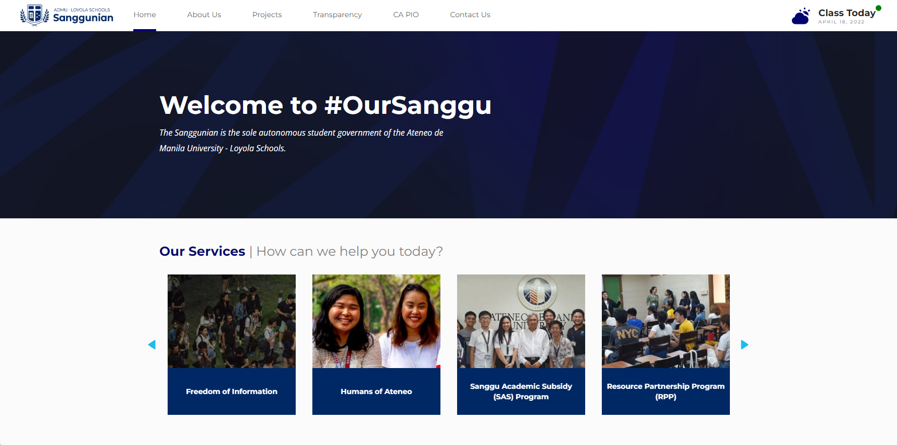

OurSanggu Revisions is a UI/UX and web development project under the UXSociety Ateneo. The project is a continuation of the development process of the Sanggunian Gazette website that started way back in 2019 and was launched in 2020. This serves as a portal for the Ateneo student government, Sanggunian ng mga Mag-aaral ng mga Paaralang Loyola ng Ateneo de Manila, to showcase their efforts, champion new advocacies, and provide the necessary information to the student body.
This project was the first client project that I was able to work on. Back then, I was not very familiar with some of the technologies, programming languages, and frameworks that they use in this project. For this, I was paired with another developer who is also quite new to development and we both worked with minimal supervision and guidance.
The project is divided into 3 parts: each one for the short term, medium term, and long term revisions. The short term and medium term revisions were only concerned with the minor changes to the existing web pages and their contents while for the long term revisions we are tasked to create the new pages that the website will have. The design for the web pages are handed to us by the design team and we only have to implement its front-end and connect to the content management system, prismic.io.
Despite being relatively new to the craft, we were able to deliver our product as promised and we were able to deploy the changes for the website.